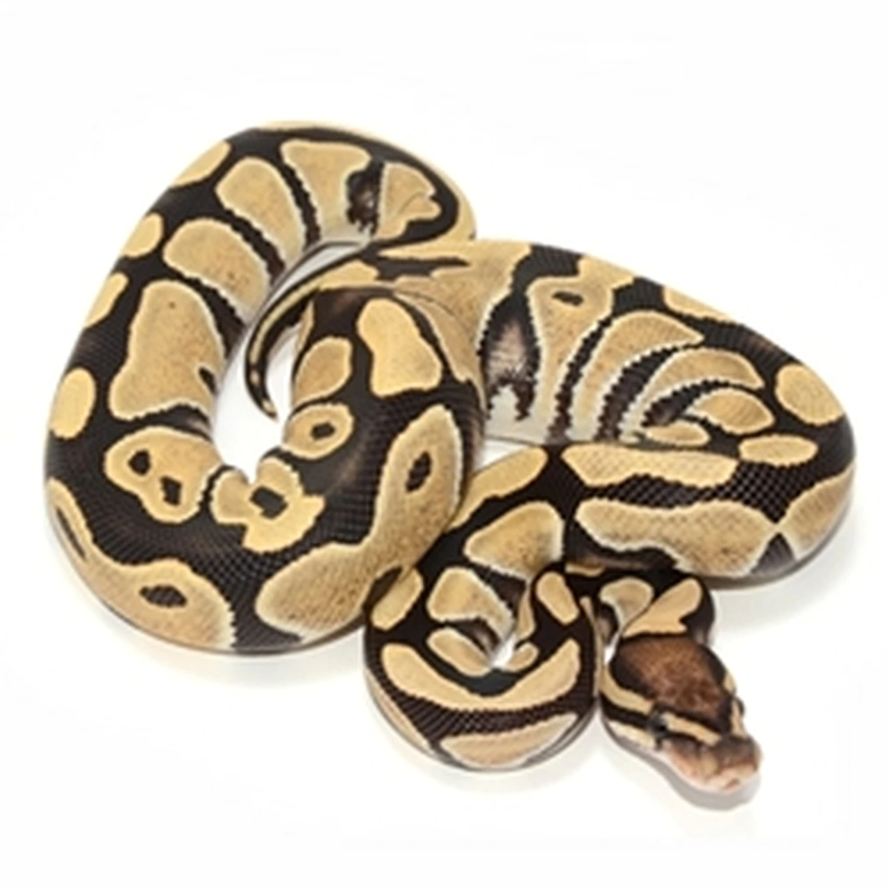

ball python
홈으로 Ball Python (Python regius) The ball python is quite simply the most popular pet python in the world. Ball pythons are generally a bit shy, but they make for ideal captives, because they are of a small size, are generally friendly, are manageable to care for, and come in a remarkable array of colors and patterns.
Ball pythons are native to central and western Africa and thrive in these warm, tropical areas. They are known as the royal python in many parts of the world and are revered in some areas of Africa. Ball pythons make for a quality pet for the first-time keeper and experienced herpetoculturists alike. Each year, breeders create incredible, innovative, never-before-seen pattern and color variations that continually generate new fans of the ball python. With reptile health and wellness in mind, this species thrives in captivity.